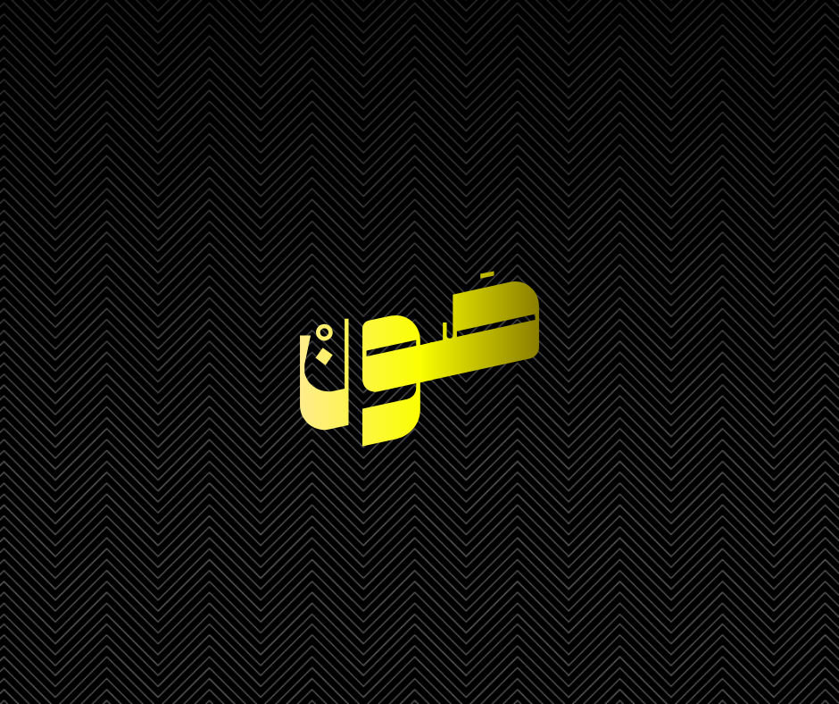

الحقيقة المطلقة: القرار بيديك أنت
عزيمة التغيير والقرار النهائي لن يمنحك إياها أحد.. هي قرارك الشخصي بينك وبين نفسك أمام الله. النصائح والأسباب متوفرة، لكن المفتاح الحقيقي بيديك أنت فقط.

منصة تُعنى بصيانة النفس وتحرير الشباب من الإدمان بعون الله في زمن صار فيه الحرام سهلاً
من واقع تجربة وممارسة حقيقية: السبب الأساسي والعميق للوقوع في الضعف المتكرر أمام الشهوات هو **الهجر الطويل لكلام الله تعالى** قراءةً وتدبرًا.
إن القلب إذا خلا من كلام الله والتعلق به، أصبح أرضًا قاحلة وسهلة الاقتحام أمام الوساوس والنظرات المحرمة. القرآن ليس مجرد عبادة تؤجر عليها، بل هو إعادة تشكيل حقيقية لبنية العقل والروح.
مقالات مكثفة وموجهة تتغير تلقائياً لتمنحك جرعة وعي جيدة في كل دخول للموقع:
إذا كنت تشعر الآن برغبة ملحة أو تباغتك أفكار الضعف، نفّذ هذه الخطوات الفورية بدون تردد:
المتعة الزائفة تدوم لدقائق معدودة، لكن الشعور بالذنب والكسر يستمر لعدة أيام. صُنْ نفسك وكن أنت المنتصر اليوم!
أهلاً بك في منصة صَـون. وجودك هنا اليوم هو دليل حي على أن ضميرك ما زال حياً، وأن في قلبك رغبة صادقة في التغيير والتحرر من الأغلال التي تكبلك.
اعلم أنك لست وحدك في هذه المعركة، وأن الضعف أمام الشهوة ليس دليلاً على أنك شخص سيئ، بل هو فخ سلوكي ونفسي وقع فيه الكثير من الشباب بسبب التسهيلات والتكنولوجيا الحديثة.
البداية تبدأ بقرار صريح وشفاف مع الذات. اترك الماضي خلفك، وابدأ رحلة جديدة ملؤها النور والكرامة والعزة وصيانة النفس.
الإباحية ليست مجرد نظرة محرمة، بل هي مادة تؤثر مباشرة على البنية الدماغية والنفسية والاجتماعية للإنسان:
التعافي يتطلب خطوات عملية وتغييراً في نمط الحياة اليومية: